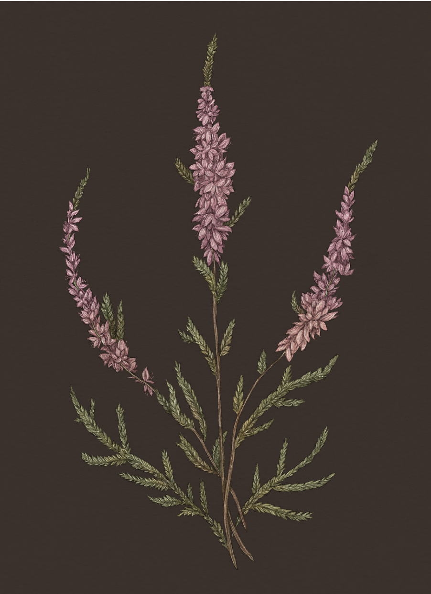

Plate HEATHER
The Language of Flowers
Heather Study

Heather
Calluna
Definition: A flower associated in floriography with luck and protection.
Meaning
- Luck
- Protection
Origin
Heather's meaning originates with Scottish folklore. In the third century, Malvina, a legendary
beauty, was betrothed to a brave warrior called Oscar. As Oscar lay dying in battle, he instructed a
messenger to deliver a sprig of purple heather to his bride-to-be as a token of his eternal love.
When Malvina's tears fell upon the flower, it changed from purple to white. From then on, heather was
said to turn sorrow to good fortune and protection. Historically, many Scottish warriors have worn
white heather in battle for this reason.
Pair With
- Rose as you begin a new relationship
- Cattail for good health for a friend awaiting a diagnosis